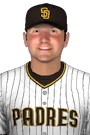

ABL · CF
Dustan Mohr
- Team
 San Diego Padres
San Diego Padres- Position
- CF
- Bats/Throws
- R/R
- Height/Weight
- 6'0", 210 lb
- Born
- Jun 19, 1976 in Hattiesburg, MS
- Age
- 25
- Uniform
- #17
- Salary
- $300,000
2002 batting
| Team | Lg | G | PA | AB | R | H | 2B | 3B | HR | RBI | BB | K | SB | AVG | OBP | SLG | OPS |
|---|---|---|---|---|---|---|---|---|---|---|---|---|---|---|---|---|---|
| SDP | ABL | 37 | 161 | 143 | 19 | 42 | 8 | 1 | 4 | 28 | 17 | 36 | 0 | .294 | .366 | .448 | .814 |
2002 batting, advanced
| Team | Lg | PA | Pit/PA | SH | SF | HBP | IBB | GIDP | CS | OPS+ | ISO | BABIP | BB% | K% | WPA | UBR | WAR |
|---|---|---|---|---|---|---|---|---|---|---|---|---|---|---|---|---|---|
| SDP | ABL | 161 | 3.49 | 0 | 1 | 0 | 0 | 4 | 1 | 101 | .154 | .365 | 10.6% | 22.4% | 0.17 | -0.6 | 1.0 |
Streaks
Longest hitting streak: 8 games (Apr 13 to Apr 21); current: 1
Longest on-base streak: 13 games (Apr 7 to Apr 21); current: 8
Batting splits
| Split | G | PA | AB | R | H | 2B | 3B | HR | RBI | BB | K | SB | AVG | OBP | SLG | OPS | ISO | BABIP | BB% | K% |
|---|---|---|---|---|---|---|---|---|---|---|---|---|---|---|---|---|---|---|---|---|
| vs LHP | 17 | 30 | 24 | 3 | 9 | 1 | 0 | 1 | 6 | 5 | 7 | - | .375 | .467 | .542 | 1.008 | .167 | .471 | 16.7% | 23.3% |
| vs RHP | 36 | 131 | 119 | 16 | 33 | 7 | 1 | 3 | 22 | 12 | 29 | - | .277 | .344 | .429 | .772 | .151 | .345 | 9.2% | 22.1% |
| Home | 20 | 87 | 74 | 11 | 23 | 4 | 0 | 2 | 14 | 12 | 18 | 0 | .311 | .402 | .446 | .848 | .135 | .382 | 13.8% | 20.7% |
| Road | 17 | 74 | 69 | 8 | 19 | 4 | 1 | 2 | 14 | 5 | 18 | 0 | .275 | .324 | .449 | .774 | .174 | .347 | 6.8% | 24.3% |
By month
| Month | G | PA | AB | R | H | 2B | 3B | HR | RBI | BB | K | SB | AVG | OBP | SLG | OPS | ISO | BABIP | BB% | K% |
|---|---|---|---|---|---|---|---|---|---|---|---|---|---|---|---|---|---|---|---|---|
| April | 26 | 112 | 100 | 12 | 27 | 5 | 1 | 3 | 19 | 11 | 25 | 0 | .270 | .339 | .430 | .769 | .160 | .329 | 9.8% | 22.3% |
| May | 11 | 49 | 43 | 7 | 15 | 3 | 0 | 1 | 9 | 6 | 11 | 0 | .349 | .429 | .488 | .917 | .140 | .452 | 12.2% | 22.4% |
Situational
| Situation | PA | AB | H | 2B | 3B | HR | RBI | BB | K | AVG | OBP | SLG | OPS |
|---|---|---|---|---|---|---|---|---|---|---|---|---|---|
| Bases empty | 70 | 63 | 19 | 3 | 1 | 0 | 0 | 7 | 16 | .302 | .371 | .381 | .752 |
| Runners on | 91 | 80 | 23 | 5 | 0 | 4 | 28 | 10 | 20 | .287 | .363 | .500 | .863 |
| Runners in scoring position | 59 | 50 | 17 | 4 | 0 | 4 | 27 | 8 | 10 | .340 | .424 | .660 | 1.084 |
| RISP, two outs | 26 | 20 | 6 | 2 | 0 | 0 | 8 | 6 | 4 | .300 | .462 | .400 | .862 |
| Innings 1-3 | 52 | 44 | 14 | 4 | 0 | 0 | 10 | 8 | 15 | .318 | .423 | .409 | .832 |
| Innings 4-6 | 62 | 55 | 15 | 1 | 1 | 2 | 9 | 7 | 12 | .273 | .355 | .436 | .791 |
| Innings 7-9 | 47 | 44 | 13 | 3 | 0 | 2 | 9 | 2 | 9 | .295 | .319 | .500 | .819 |
Situational splits are rebuilt from every plate appearance in the export (base/out state when the PA began). "RBI" counts runs batted in on that PA.
2002 batting game log
| Date | Opp | Score | Pos | Bat | PA | AB | R | H | 2B | 3B | HR | RBI | BB | K | SB | CS | HBP | GIDP | WPA |
|---|---|---|---|---|---|---|---|---|---|---|---|---|---|---|---|---|---|---|---|
| May 13 | @KCM | W 16-2 | CF | 2 | 6 | 6 | 0 | 2 | 0 | 0 | 0 | 0 | 0 | 1 | 0 | 0 | 0 | 0 | -0.004 |
| May 12 | @KCM | L 4-15 | CF | 5 | 3 | 2 | 0 | 0 | 0 | 0 | 0 | 0 | 1 | 0 | 0 | 0 | 0 | 0 | -0.001 |
| May 11 | @KCM | W 11-6 | CF | 6 | 5 | 4 | 2 | 1 | 0 | 0 | 0 | 1 | 1 | 1 | 0 | 0 | 0 | 0 | 0.038 |
| May 10 | vsLAA | W 5-2 | CF | 2 | 4 | 3 | 1 | 2 | 1 | 0 | 0 | 0 | 1 | 0 | 0 | 0 | 0 | 0 | 0.095 |
| May 9 | vsLAA | W 4-3 | CF | 6 | 4 | 3 | 0 | 0 | 0 | 0 | 0 | 0 | 1 | 1 | 0 | 0 | 0 | 0 | -0.098 |
| May 8 | vsLAA | W 3-1 | CF | 5 | 4 | 2 | 0 | 0 | 0 | 0 | 0 | 0 | 2 | 0 | 0 | 0 | 0 | 0 | 0.027 |
| May 5 | @MON | W 9-2 | LF | 4 | 5 | 5 | 1 | 2 | 1 | 0 | 1 | 3 | 0 | 2 | 0 | 0 | 0 | 0 | -0.041 |
| May 4 | @MON | L 7-8 | LF | 6 | 3 | 3 | 1 | 2 | 1 | 0 | 0 | 3 | 0 | 1 | 0 | 0 | 0 | 0 | 0.270 |
| May 3 | vsAUS | L 4-7 | CF | 2 | 5 | 5 | 0 | 0 | 0 | 0 | 0 | 0 | 0 | 3 | 0 | 0 | 0 | 0 | -0.158 |
| May 2 | vsAUS | W 5-4 | CF | 2 | 5 | 5 | 1 | 3 | 0 | 0 | 0 | 1 | 0 | 0 | 0 | 0 | 0 | 0 | 0.303 |
| May 1 | vsAUS | L 8-11 | CF | 5 | 5 | 5 | 1 | 3 | 0 | 0 | 0 | 1 | 0 | 2 | 0 | 0 | 0 | 0 | -0.001 |
| Apr 30 | vsTBR | W 3-0 | CF | 6 | 3 | 3 | 0 | 0 | 0 | 0 | 0 | 0 | 0 | 2 | 0 | 0 | 0 | 0 | -0.035 |
| Apr 28 | vsTBR | W 12-3 | CF | 5 | 5 | 5 | 2 | 2 | 0 | 0 | 1 | 3 | 0 | 1 | 0 | 0 | 0 | 0 | -0.143 |
| Apr 27 | @BAL | W 5-0 | CF | 6 | 4 | 4 | 0 | 1 | 0 | 0 | 0 | 0 | 0 | 0 | 0 | 0 | 0 | 0 | -0.085 |
| Apr 26 | @BAL | W 5-3 | CF | 6 | 4 | 4 | 1 | 2 | 1 | 0 | 0 | 1 | 0 | 0 | 0 | 0 | 0 | 1 | 0.210 |
| Apr 25 | @BAL | L 0-1 | CF | 6 | 4 | 4 | 0 | 1 | 0 | 0 | 0 | 0 | 0 | 1 | 0 | 0 | 0 | 1 | -0.110 |
| Apr 23 | vsSLB | W 9-0 | RF | 5 | 4 | 2 | 1 | 1 | 0 | 0 | 1 | 4 | 1 | 0 | 0 | 0 | 0 | 0 | 0.079 |
| Apr 22 | vsSLB | W 9-4 | CF | 6 | 5 | 5 | 0 | 0 | 0 | 0 | 0 | 0 | 0 | 1 | 0 | 0 | 0 | 0 | -0.070 |
| Apr 21 | vsSLB | W 12-4 | RF | 5 | 5 | 5 | 1 | 2 | 1 | 0 | 0 | 3 | 0 | 1 | 0 | 0 | 0 | 0 | 0.079 |
| Apr 20 | @NASH | W 13-12 | CF | 6 | 5 | 4 | 1 | 1 | 0 | 0 | 0 | 0 | 1 | 2 | 0 | 0 | 0 | 0 | 0.036 |
| Apr 19 | @NASH | L 2-5 | CF | 6 | 4 | 4 | 0 | 1 | 0 | 0 | 0 | 0 | 0 | 1 | 0 | 0 | 0 | 0 | -0.059 |
| Apr 17 | vsMEXC | W 5-1 | RF | 5 | 4 | 3 | 1 | 1 | 0 | 0 | 0 | 0 | 1 | 0 | 0 | 0 | 0 | 0 | -0.015 |
| Apr 16 | vsMEXC | L 2-5 | CF | 6 | 4 | 4 | 0 | 1 | 0 | 0 | 0 | 0 | 0 | 0 | 0 | 1 | 0 | 1 | -0.065 |
| Apr 15 | vsMEXC | W 5-2 | CF | 6 | 3 | 3 | 1 | 1 | 0 | 0 | 0 | 0 | 0 | 0 | 0 | 0 | 0 | 0 | -0.002 |
| Apr 14 | @CLE | W 10-2 | CF | 6 | 5 | 4 | 0 | 1 | 0 | 0 | 0 | 0 | 1 | 1 | 0 | 0 | 0 | 0 | -0.051 |
| Apr 13 | @CLE | L 2-4 | CF | 5 | 4 | 4 | 0 | 1 | 0 | 0 | 0 | 0 | 0 | 2 | 0 | 0 | 0 | 0 | -0.034 |
| Apr 12 | @CLE | L 7-9 | CF | 6 | 5 | 4 | 0 | 0 | 0 | 0 | 0 | 0 | 1 | 2 | 0 | 0 | 0 | 0 | -0.058 |
| Apr 10 | vsPoBe | W 6-5 | RF | 4 | 5 | 4 | 1 | 2 | 1 | 0 | 0 | 1 | 1 | 0 | 0 | 0 | 0 | 0 | 0.130 |
| Apr 9 | vsPoBe | W 9-1 | CF | 6 | 4 | 2 | 0 | 1 | 0 | 0 | 0 | 1 | 2 | 0 | 0 | 0 | 0 | 0 | 0.078 |
| Apr 8 | vsPoBe | L 7-10 | CF | 6 | 5 | 4 | 0 | 0 | 0 | 0 | 0 | 0 | 1 | 2 | 0 | 0 | 0 | 0 | -0.145 |
| Apr 7 | @CIN | W 9-5 | CF | 6 | 5 | 5 | 1 | 2 | 1 | 0 | 1 | 6 | 0 | 0 | 0 | 0 | 0 | 0 | 0.175 |
| Apr 6 | @CIN | W 8-4 | CF | 2 | 5 | 5 | 0 | 0 | 0 | 0 | 0 | 0 | 0 | 1 | 0 | 0 | 0 | 1 | -0.216 |
| Apr 5 | vsPIT | L 3-6 | CF | 6 | 4 | 4 | 0 | 1 | 0 | 0 | 0 | 0 | 0 | 2 | 0 | 0 | 0 | 0 | -0.071 |
| Apr 4 | vsPIT | L 10-14 | CF | 2 | 5 | 5 | 1 | 2 | 0 | 0 | 0 | 0 | 0 | 2 | 0 | 0 | 0 | 0 | 0.026 |
| Apr 3 | vsPIT | L 2-8 | CF | 2 | 4 | 2 | 0 | 1 | 1 | 0 | 0 | 0 | 2 | 1 | 0 | 0 | 0 | 0 | 0.042 |
| Apr 2 | @MIN | L 2-3 | CF | 6 | 3 | 3 | 0 | 1 | 0 | 0 | 0 | 0 | 0 | 1 | 0 | 0 | 0 | 0 | 0.006 |
| Apr 1 | @MIN | W 7-3 | CF | 6 | 4 | 4 | 1 | 1 | 0 | 1 | 0 | 0 | 0 | 2 | 0 | 0 | 0 | 0 | 0.042 |
2002 fielding by position
| Team | Lg | Pos | G | GS | Inn | TC | PO | A | E | DP | FPct | ZR | Arm | Framing | SB | CS | CS% | PB |
|---|---|---|---|---|---|---|---|---|---|---|---|---|---|---|---|---|---|---|
| SDP | ABL | CF | 31 | 31 | 272.1 | 115 | 111 | 4 | 0 | 1 | 1.000 | 5.8 | -1.4 | - | - | - | - | - |
| SDP | ABL | RF | 4 | 4 | 36.0 | 7 | 7 | 0 | 0 | 0 | 1.000 | 0.3 | -0.1 | - | - | - | - | - |
| SDP | ABL | LF | 2 | 2 | 16.0 | 5 | 5 | 0 | 0 | 0 | 1.000 | 0.3 | 0.0 | - | - | - | - | - |
ZR (zone rating), Arm and Framing are OOTP's runs-above-average figures. SB/CS/CS% are base stealers against him as a catcher.
Career batting
| Year | Team | Lvl | G | PA | AB | R | H | 2B | 3B | HR | RBI | BB | K | SB | AVG | OBP | SLG | OPS | WAR |
|---|---|---|---|---|---|---|---|---|---|---|---|---|---|---|---|---|---|---|---|
| 1997 | - | Short-A | 74 | 314 | 275 | 52 | 80 | 20 | 2 | 7 | 53 | 31 | 53 | 3 | .291 | .366 | .455 | .821 | 2.5 |
| 1998 | DSNY | A | 134 | 543 | 491 | 60 | 119 | 23 | 9 | 19 | 65 | 39 | 94 | 8 | .242 | .309 | .442 | .751 | 2.8 |
| 1999 | AKRN | AA | 12 | 48 | 42 | 3 | 7 | 2 | 1 | 0 | 2 | 5 | 7 | 0 | .167 | .255 | .262 | .517 | -0.3 |
| 1999 | DSNY | A | 112 | 458 | 429 | 46 | 120 | 29 | 3 | 8 | 60 | 26 | 104 | 6 | .280 | .322 | .417 | .739 | 2.1 |
| 2000 | T | A | 101 | 418 | 370 | 58 | 98 | 19 | 2 | 11 | 75 | 35 | 65 | 7 | .265 | .338 | .416 | .754 | 2.4 |
| 2001 | MIN | Majors | 20 | 57 | 51 | 6 | 12 | 2 | 0 | 0 | 4 | 5 | 17 | 1 | .235 | .298 | .275 | .573 | -0.2 |
| 2001 | HAVA | AA | 135 | 574 | 518 | 90 | 174 | 41 | 3 | 24 | 91 | 49 | 111 | 9 | .336 | .395 | .566 | .961 | 4.5 |
| 2002 | SDP | ABL | 37 | 161 | 143 | 19 | 42 | 8 | 1 | 4 | 28 | 17 | 36 | 0 | .294 | .366 | .448 | .814 | 1.0 |
| Top level | 57 | 218 | 194 | 25 | 54 | 10 | 1 | 4 | 32 | 22 | 53 | 1 | .278 | .349 | .402 | .751 | 0.9 |
Seasons before 2002 are the player's real-life record, listed under the franchise that holds that history in this universe. "Top level" totals count major-league-level seasons only.
Service time & contract status
- Service time
- 0.056 (56 days; 43 this season)
- Status
- Pre-Arb
- Arbitration
- 2005 season (projected)
- Free agency
- After the 2007 season (projected)
- Options
- 0 used, 3 remaining (of 3)
Service time is Y.DDD: major-league service years plus days toward the next year (172 days = 1 year, from the league rules). Status follows the league rules: under 3 years Pre-Arb, 3 to 5 years Arb 1/2/3, 6+ years FA-eligible. The export's arbitration_offering is 0 and no player has gone through arbitration yet (has_received_arbitration is 0 for everyone), so these statuses come from the rules, not from hearings. Projected years assume a full major-league season of service every year from 2002 on.
Contract
| Year | Salary |
|---|---|
| 2002 | $300,000 |
1-year contract with San Diego Padres.
Most frequent matchups pitchers he has faced
| Pitcher | AB | H | HR | AVG |
|---|---|---|---|---|
| Jeff Weaver | 4 | 2 | 0 | .500 |
| Kenny Rogers | 4 | 2 | 0 | .500 |
| Jason Bere | 4 | 0 | 0 | .000 |
| Steve Sparks | 3 | 2 | 0 | .667 |
| Woody Williams | 3 | 2 | 1 | .667 |
| Shane Reynolds | 3 | 2 | 0 | .667 |
| Paul Wilson | 3 | 2 | 0 | .667 |
| Darryl Kile | 3 | 1 | 0 | .333 |
| John Stephens | 3 | 1 | 0 | .333 |
| Donovan Osborne | 3 | 1 | 0 | .333 |
| Steve Trachsel | 3 | 1 | 0 | .333 |
| Alejandro Romero | 3 | 1 | 0 | .333 |
| Jesus Rios | 3 | 1 | 0 | .333 |
| John Thomson | 3 | 1 | 0 | .333 |
| Brian Sweeney | 3 | 1 | 0 | .333 |